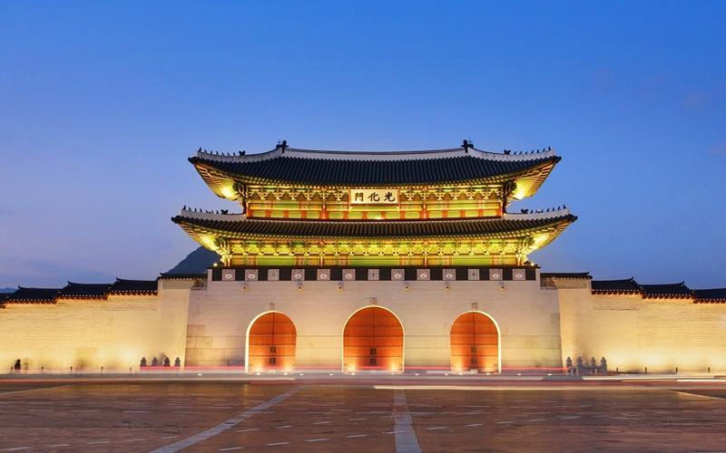
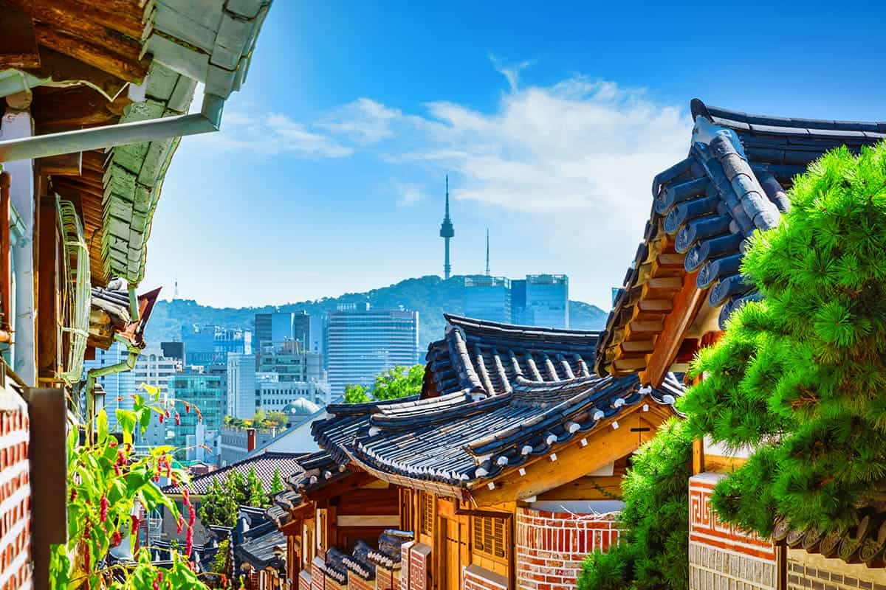
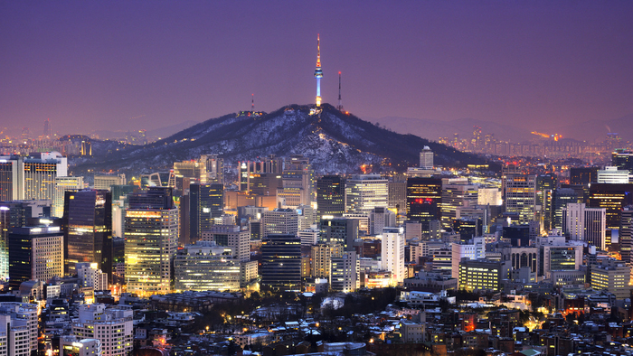

서울특별시 종로구 사직로 161 (세종로)에 있는 조선시대의 궁궐. 조선의 정궁(법궁)으로, 사적 제117호로 지정되었다. 태조가 조선을 건국하고 한양 천도를 단행[4]하면서 왕조에서 가장 먼저 지은 궁궐로, 14세기부터 16세기 말 선조 재위 초기까지 법궁(제1정궁)으로 사용되었다.

서울특별시 종로구 가회동, 삼청동 내의 한옥 밀집지역을 칭한다. 편의상 그 일대를 북촌이라 부르나 엄밀하게는 가회동, 계동, 화동 등 일부 법정동만을 포함한다.

정식 명칭은 남산서울타워지만, 보통은 줄여서 남산타워로 불리는 편이다. CJ푸드빌에서 일부 층을 임대하여 운영하는 전망대 및 복합문화공간의 이름인 N서울타워로 불리는 경우도 많다.
